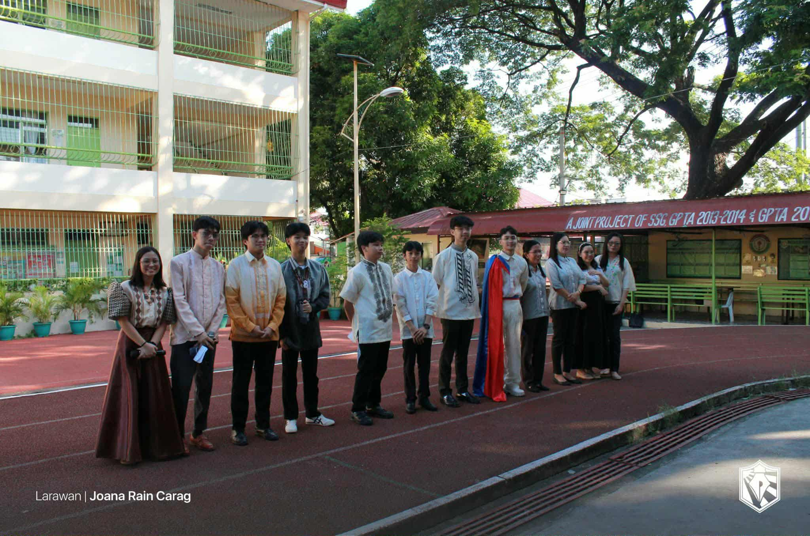
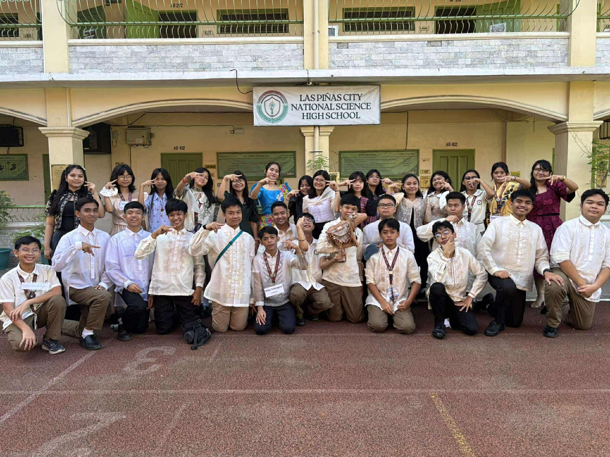

2025-2026
Celebrating Buwan ng Wika 2025–2026 at LPSCI taught me the value of embracing our Filipino culture, language, and identity. Through wearing traditional Filipiniana attire and participating in the classroom declamation, I gained a deeper appreciation for the richness of our heritage and improved my confidence in using the Filipino language. I actively participated by expressing myself in front of my classmates and supporting others during the event, which created a sense of unity and pride among us. These experiences reminded me that our culture is something to be proud of and preserved.
If I were to teach this subject to a classmate, I would focus on making it interactive and relatable by using activities like storytelling, role-playing, and discussions about Filipino values and traditions. It’s important to celebrate Buwan ng Wika because it strengthens our connection to our roots and encourages us to take pride in being Filipino. In real life, I can apply what I learned by using the Filipino language more often, joining cultural events, and sharing our traditions with others to help keep them alive.🌸

